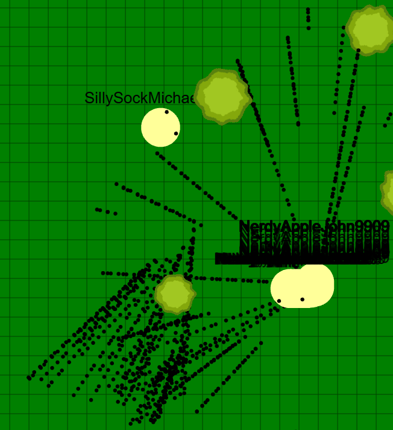

Spellfire
A blazingly fast MMO game server

Frontend Stack
- Rust
Memory safety + high performance. Your code will never segfault while running blazingly fast.
- Bevy
Modular ECS game engine designed for scalability, perfect for building MMO-sized worlds.
- Integrated debugging inspector
Live-inspection of entities and components for rapid iteration.
- GPU-accelerated particles using Hanabi
Fire, smoke, and spell effects offloaded to the GPU, freeing up CPU for gameplay logic.
Backend Stack
- Golang
Goroutines + channels. Basically the perfect programming language for an MMO.
- Autovectorized ECS
Cache-friendly, SIMD-accelerated updates that can process thousands of entities each tick. Uses
kelindar/column under the hood.
- Sqlc database
Generates type-safe SQL code at compile time, great for catching bugs.
- Protobuf for Golang
A compact binary serialization format, makes networking go zoom.